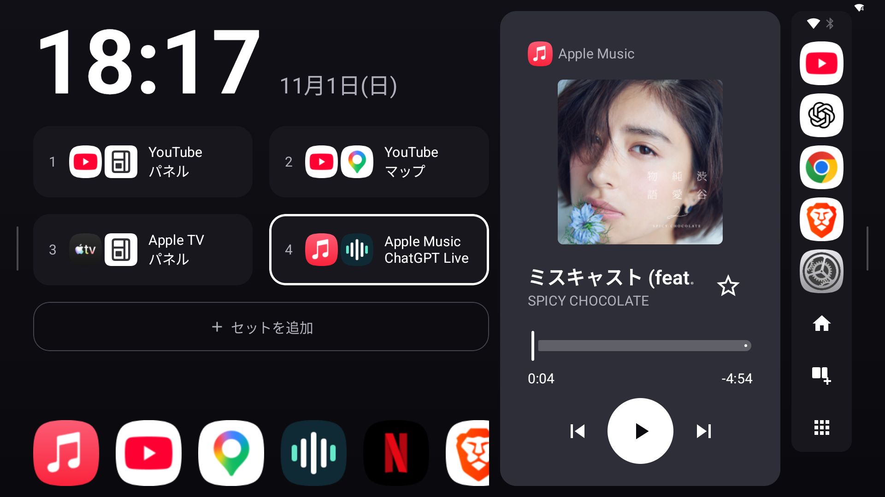
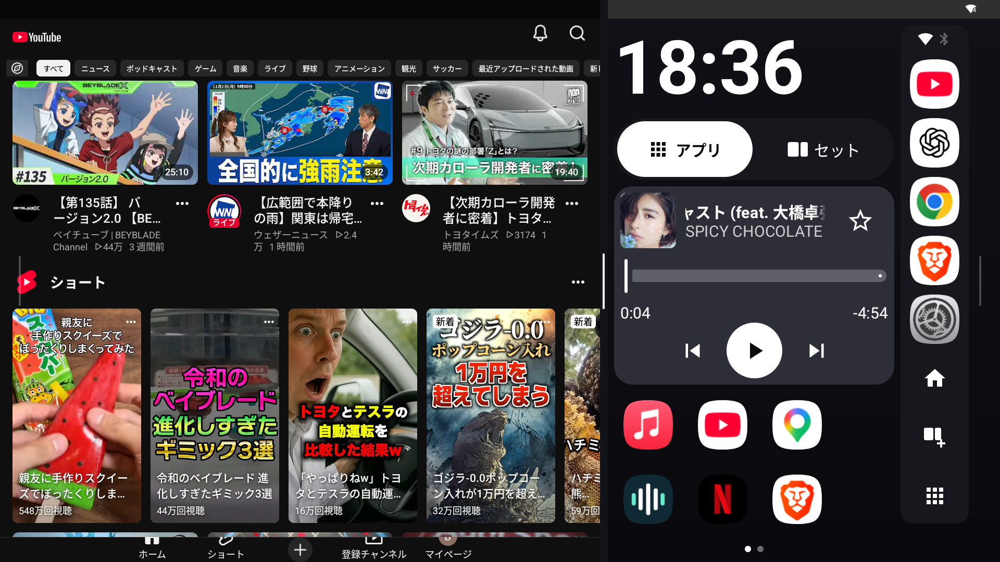

画面セット
左右のアプリ・比率・パネルの位置をまとめて保存し、ひと押しで再現。仕切りのダブルタップで入れ替えた左右も保存。
GT8D CUSTOM LAUNCHER v2.3.1
GT8D のためのランチャー。左右の分割を「画面セット」として保存し、すぐに呼び出す。

FEATURES
左右のアプリ・比率・パネルの位置をまとめて保存し、ひと押しで再現。仕切りのダブルタップで入れ替えた左右も保存。
今のアプリを残したまま、外部ブラウザを分割の反対側に開く。開くブラウザは設定で選べる。
時計・ミニプレイヤー・アイコン・ドックを狭い幅に。左右どちらにも置けて、アプリとセットの表示を切り替えられる。
ほかのアプリを使っていても、画面の端から操作。次・前のセットやホームへ移動できる。
ホームとパネルに、いま聴いている曲。ジャケットを押せば再生中のアプリへ、★でお気に入りに。止めている曲も表示する。
直近7日間の使い方から、よく使うアプリを並べる。いつものアプリを、手の届く場所に。
SCREENS
画像を押すと原寸を新しいタブで開きます。

HOW TO USE
左右のアプリと比率を選び、いつもの組み合わせを保存。
ホームのカードを押すか、端のジェスチャで呼び出す。
今の画面を使いながら、もう片方の画面へ。
INSTALLATION
GT8D・Android 15。
同じ署名鍵で署名した、本体（com.gt8d.launcher）→ 中継（com.gt8d.launcher.panel）の順に install -r でインストールします。続いて、通知へのアクセスを許可します。
adb install -r app-release.apk
adb install -r panelhost-release.apk
adb shell cmd notification allow_listener com.gt8d.launcher/com.gt8d.launcher.media.MediaListenerService再インストール後は、通知へのアクセスを許可し直してください。
詳しい導入手順を読むFAQ
純正の分割は右側のアプリを「既存のタスク」から選びます。パネルを独立したアプリ（中継）にして、その中にパネルを開くことで、分割の右側に安定して置けます。
既定のホームが YLuncher だと、再起動後に純正ランチャーが一度も開かれず、純正の分割が反応しません。v1.6.2 から、必要なときだけ純正ランチャーを一瞬開いて準備します。
再インストールで通知へのアクセスが外れます。通知へのアクセスを許可し直してください。
幕が閉じて知らせが出ます。もう一度押すか、設定の「許可のチェック」を確認してください。
設定の「純正ランチャーに戻す」を選んでください。
DESIGN
大きな押す場所。最小72dpで、操作のしやすさを大切に。
案内の文字を置かず、必要な操作が見える画面に。
Material 3 に沿った、まとまりのあるデザイン。